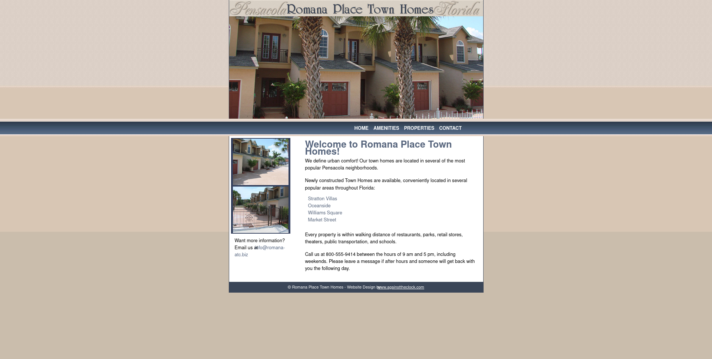

Contact
Phone Number:(217) 123-4593
Email: astudent@lakelandcollege.edu
Project One
With this site I was working on fixing link issues and cleaning up the site's file organization.
Portfolio One
I cleaned up and completed Romana Place Town Homes' website. Made sure all links worked and were readable, as well as organized all files on the site.
Portfolio Two

With this site I replicated a and made sure all the semantic elements were setup correctly. With the semantic tags, I improved accessability.